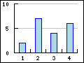
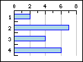
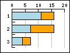
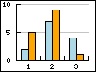
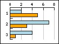
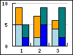
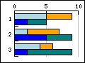

The library supports 2D vertical and horizontal bar plots as was shown in the
introduction section . To use bar plots the bar plot module
"jpgraph_bar.php" must be included in the script.
There are eight fundamental types of bar graphs supported by the library. Examples of the available types are shown in Figure 15.33. Different types of supported bar graphs
Figure 15.33. Different types of supported bar graphs
|
 a) Vertical bar |
 b) Horizontal bar |
|
c) Vertical accumulated bar |
 d) Horizontal accumulated bar |
|
 e) Vertical group bar |
 f) Horizontal group bar |
|
 g) Vertical group accumulated bar |
 h) Horizontal group accumulated bar |

Using bar plots is straightforward and works in much the same way as line plots as was discussed in the previous sections.
An instance of class BarPlot is created with the wanted data and is
then either added directly to the graph to create a basic bar plot or is enclosed in
with one of the container classes AccBarPlot or
GroupBarPlot which are then added to the graph.
There is however one crucial change that is usually made. The x-scale is usually
specified as a "text" type scale. The reasons this are primarily
two
-
to get the alignment of the labels to be between the tick marks and not at the tick marks as is normal for line plots
-
to get the bars to be aligned at the center between the tick marks
The following two examples shows the difference between using an integer scale in
Figure 15.34. Using "int" scale for the x-axis ( and a text sale in Figure 15.35. Using "text" scale for the x-axis example19.1.php)( example19.php)
|
|
|
As can be seen in Figure 15.34. Using "int" scale for the x-axis ( the bars have there left
edge aligned with the data value and the tick mark (the tick mark can not be seen
since it is aligned exactly with the left edge of the bar). In contrast using a text
scale in Figure 15.35. Using "text" scale for the x-axis example19.1.php)( adjusts the alignment of tick marks and
labels in a way that is more commonly used with bar graphs.example19.php)
Some other commonly used method to change the appearance of the bar graphs are
-
BarPlot::SetFillColor($aColor)This is used to specify the fill color of the bar. The argument can also be an array and in that case each color in the array is used for individual successive bars.
-
BarPlot::SetFillGradient($aFromColor,$aToColor=null,$aStyle=null)Specifies a gradient fill style for the bars. See ?? for details.
-
BarPlot::SetPattern($aPattern, $aColor='black')Specifies a pattern to be used to fill the bars. See ?? for details
-
BarPlot::SetWidth($aWidth)Specifies the width of the individual bars. Of this is an integer value > 1 it is interpretated as the absolute width in pixels. If the values instead is a real number in the range [0,1] it is interpretated as the fraction of the width between the tick marks. By default the width is set to 0.4
Accumulated bar plots will show several data series stacked on top of each other in each bar. They are the barplot variant of accumulated area plots as was discussed previously.
An accumulated bar plot is made by aggregating one or more basic bar plots in
the container class AccBarPlot as the following code snippet
shows
1 2 3 4 5 6 7 8 9 10 11 12 13 14 15 16 17 | // Some data $data1y = ... $data2y = ... // Create two bar plots $b1plot = new BarPlot($data1y); $b1plot->SetFillColor('orange'); $b2plot = new BarPlot($data2y); $b2plot->SetFillColor('blue'); // Create the accumulated bar plot $gbplot = new AccBarPlot(array($b1plot,$b2plot)); // Add the accumulated plot to the graph $graph->Add($gbplot); |
An example of an accumulated bar plot is shown in Figure 15.36. An accumulated bar plot ( example23.php)
There are some subtleties when it comes to the formatting of the frames a round each bar in an accumulated bar plots that might be useful to know. The basic ambiguity that exists is that when we stack the bars on top of each other to create a new accumulated bar each individual bar has properties that was (or could) be set when each individual barplot was created like the frame around the plot.
For example, take the following basic accumulated bar plot (partial script)
1 2 3 4 5 6 7 8 9 10 11 12 13 14 15 | // Create the first bar $bplot = new BarPlot($datay1); $bplot->SetFillGradient('AntiqueWhite2','AntiqueWhite4:0.8',GRAD_VERT); $bplot->SetColor('darkred'); // And the second bar $bplot2 = new BarPlot($datay2); $bplot2->SetFillGradient('olivedrab1','olivedrab4',GRAD_VERT); $bplot2->SetColor('darkgreen'); // Join them in an accumulated (stacked) plot $accbplot = new AccBarPlot(array($bplot,$bplot2)); $graph->Add($accbplot); |
As you can see on line 5 and on line 10 we have set the frame color
differently in the two individual plots. However, the accumulated bar plot also
have a frame color property (and a weight as well) so what shall we use? If we
run a full example based on the lines above the result is shown in Figure 15.37. Accumulated bar with individual frame colors ( below.accbarframeex01.php)
As can be seen from the graph the bar around each part has the color on th frame that was set on the individual bar. There is one exception though. The line that separates the two bars are shared and will always follow the color of the top bar.
If we instead specify a frame for the accbar by adding the lines
1 2 3 4 5 6 | $accbplot = new AccBarPlot(array($bplot,$bplot2)); $accbplot->SetColor('red'); $accbplot->SetWeight(1); $graph->Add($accbplot); |
The result would be as is shown in Figure 15.38. Accumulated bar with unit frame color (
and the properties of the accumulated bar takes precedence, again with one
exception. The divider lines inside the bar is still controlled by the
individual plot. By default the line weight on the accumulated bar is 0 which
means that it will not be drawn, that is why we have to set a line weight on
line 4 above.accbarframeex02.php)
If we instead were to set the individual line weight to zero, i.e.
1 2 3 4 | $bplot->SetWeight(0); $bplot2->SetWeight(0); |
and keep the overall frame the result would become as shown in Figure 15.39. Setting individual frames to weight=0 ( belowaccbarframeex03.php)
This uses the same principle as accumulated bar plots but instead of stacking the data series on top of each other they are shown together for the same x-value.
These types of bar graph is used to easy group two or more bars together
around each tick (x-value). The bars will be placed immediately beside each
other and as a group centered on each tick mark (or between if a text scale is
used). A grouped bar is created by aggregating two or more ordinary bar plots
and creating a GroupBarPlot
1 2 3 4 5 6 7 8 9 10 11 12 13 14 15 16 17 18 | // Some data $data1y = ... $data2y = ... // Create the bar plots $b1plot = new BarPlot ( $data1y ); $b1plot->SetFillColor ( 'orange' ); $b2plot = new BarPlot ( $data2y ); $b2plot->SetFillColor ( 'blue' ); // Create the grouped bar plot $gbplot = new GroupBarPlot (array( $b1plot , $b2plot )); // Add it to the graph $graph->Add ( $gbplot ); |
An example of this is shown in Figure 15.40. A grouped bar plot ( example21.php)
If the SetWidth() method is used on the
GroupBarPlot() it will affect the total width used by all the
added plots. Each individual bar width will be the same for all added bars. The
default width for grouped bar is 70% of the width between the tick marks in the
graph. In Figure 15.41. Adjusting the width of a group bar plot ( an example where the width is set
to 90% is shown.example22.php)
The number of data points in each data series must be the same. This means
that if there are no available values they should be specified as 0. An example
of this is shown in Figure 15.42. All data series in a grouped bar graph must have the same number of data points ( groupbarex1.php)
Figure 15.42. All data series in a grouped bar graph must have the same number of data points ( groupbarex1.php)
It is perfectly possible to combine the previous bar types to have a grouped accumulated bar plot. This is done in a similar way by aggregating a number of accumulated plots in a group bar plot. The following code snippte shows how this can be done
1 2 3 4 5 6 7 8 9 10 11 12 13 14 15 16 17 18 19 20 21 | // Create all the 4 bar plots $b1plot = new BarPlot( $data1y ); $b1plot->SetFillColor( "orange" ); $b2plot = new BarPlot( $data2y ); $b2plot->SetFillColor( "blue" ); $b3plot = new BarPlot( $data3y ); $b3plot->SetFillColor( "green" ); $b4plot = new BarPlot( $data4y ); $b4plot->SetFillColor( "brown" ); // Create the accumulated bar plots $ab1plot = new AccBarPlot(array( $b1plot , $b2plot )); $ab2plot = new AccBarPlot(array( $b3plot , $b4plot )); // Create the grouped bar plot $gbplot = new GroupBarPlot(array( $ab1plot , $ab2plot )); // Add the combination to the graph $graph->Add( $gbplot ); |
An example of this is shown in Figure 15.43. A grouped accumulated bar graph (
belowexample24.php)
If a large number of values to needs to be display in a bar graph it is often better to rotated the bar graph 90 degree so that the bars are horizontal instead. There is no special graph type for this so this is achieved by rotating a standard vertical bar graph 90 degrees, usually with a call to
-
Graph::Set90AndMargin()
The orientation of the labels of the axis will be automatically adjusted for
bar graphs. A basic example is shown in Figure 15.44. A basic horizontal bar graph (
belowhorizbarex1.php)
The example in Figure 15.45. Using multiple line labels in a horizontal bar graph ( shows how to use multiple
lines as labels. horizbarex4.php)
Caution
Note that we have to use quotation marks (") and not hyphens (') in text string where we want to embed a newline character, i.e. "\n"
The width of each individual bar can be specified in either an absolute pixel size or as a fraction of the width between the major tick marks. The method used for this is
-
BarPlot::SetWidth($aWidth)If
$aWidthis an integer > 1 then it is interpretated as an absolute width in pixels. If it is a floating point number in the range [0,1] it will be interpretated as a fraction of the width between the tick marks.
It is possible to use color gradient fill for the individual bars in the bar graph.
Color gradient fill fills a rectangle with a smooth transition between two colors. In what direction the transition goes (from left to right, down and up, from the middle and out etc) is determined by the style of the gradient fill. The library currently supports 8 different styles. All supported styles are displayed in Figure 15.46. Supported gradient fills for bar plots below.

To specify a gradient fill for the bar plots you make use of the method
BarPlot::SetFillGradient() . See the class reference for
details of this function.
Caution
Gradient filling is computational expensive. Large plots with gradient fill will take in the order of 6 times longer to fill then for a normal one-color fill. This might to some extent be helped by making use of the cache feature of JpGraph so that the graph is only generated a few times.
As a final example we show an horizontal bar graph with gradient fill on
both the background and the bars in Figure 15.55. Horizontal bar graph with gradient fill (
horizbarex6.php)
As an alternative to solid and gradient fill the bars can also have a number of patterns. This is useful for the case where black and white copies needs to be printed. The library supports the following nine different patterns as shown in Figure 15.56. Supported pattern fills for bar plots


To specify a pattern to be used the following method is used
-
BarPlot::SetPattern($aPattern,$aColor='black')$aPatternis one of the symbolic names as shown in Figure 15.56. Supported pattern fills for bar plots If$aPatternis an array then each specified pattern will be used successively for each individual bar. If there are more bars then pattern specified then pattern used will be wrapped around.
In the same way as values could be displayed on line plots they can also be displayed on bar graphs. The formatting options for bar graphs, apart from the basic font,color and angle, also allows the specification on where on the bar the values should be displayed. This can be
-
at the bottom of the bar, "
bottom" -
at the middle of the bar, "
middle" -
at the maximum value (but still inside the bar). "
max" -
at the top of the bar (outside the bar), "
top"
The position is adjusted with a call to
-
BarPlot::SetValuePos($aPos)
using one of the above strings as value.
The value of the bar is enabled and controlled by accessing the "value" property of the bar plot. The following line will enable the value (this is done in exactly the same way as for line plots)
1 | $barplot->value->Show(); |
By default the value is displayed at the top of the bar. In the same way as for line plot it is possible to adjust the formatting of the data labels by both using a format callback function as well as statically adjusting the format, for example the angle of the label.
1 2 3 4 5 6 7 8 9 10 11 12 13 | // Callback function
function separator1000_usd($aVal) {
return '$'.number_format($aVal);
}
// Must use TTF fonts if we want text at an arbitrary angle
$bplot->value->SetFont(FF_ARIAL,FS_BOLD);
$bplot->value->SetAngle(45);
$bplot->value->SetFormatCallback('separator1000_usd');
// Black color for positive values and darkred for negative values
$bplot->value->SetColor('black','darkred');
$graph->Add($bplot); |
There is one thing to take notice of here. The color of the label can be different depending on whether the bar has a positive or a negative value.
An example of using these formatting options for a bar graph is shown in
Figure 15.57. Using a callback to format the labels on a bar ( barscalecallbackex1.php)
Each bar can also have a drop shadow. This is enabled by calling
-
BarPlot::SetShadow($aColor="black",$aHSize=3,$aVSize=3,$aShow=true)$aColor, The color of the drop shadow$aHSize, Horizontal size of the shadow$aVSize, Vertical size of the shadow$aShow,true= enable the shadow